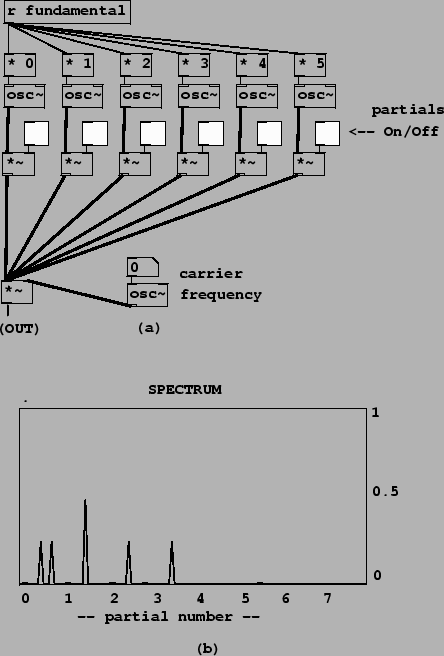

Example E01.spectrum.pd serves to introduce a spectrum measurement tool we'll be using; here we'll skip to the second example, E02.ring.modulation.pd, which shows the effect of ring modulating a harmonic spectrum (which was worked out theoretically in Section 5.2 and shown in Figure 5.4). In the example we consider a signal whose harmonics (from 0 through 5) all have unit amplitude. The harmonics may be turned on and off separately using toggle switches. When they are all on, the spectral envelope peaks at DC (because the constant signal counts twice as strongly as the other sinusoids), has a flat region from harmonics 1 through 5, and then descends to zero.
|  |
In the signal generation portion of the patch (part (a) of the figure), we sum the six partials and multiply the sum by the single, carrier oscillator. (The six signals are summed implicitly by connecting them all to the same inlet of the *~ object.) The value of ``fundamental" at the top is computed to line up well with the spectral analysis, whose result is shown in part (b) of the figure.
The spectral analysis (which uses techniques that won't be described until Chapter 9) shows the location of the sinusoids (assuming a discrete spectrum) on the horizontal axis and their magnitudes on the vertical one. So the presence of a peak at DC of magnitude one in the spectrum of the input signal predicts, à la Figure 5.3, that there should be a peak in the output spectrum, at the carrier frequency, of height 1/2. Similarly, the two other sinusoids in the input signal, which have height 1/2 in the spectrum, give rise to two peaks each, of height 1/4, in the output. One of these four has been reflected about the left edge of the figure (taking the absolute value of its negative frequency).